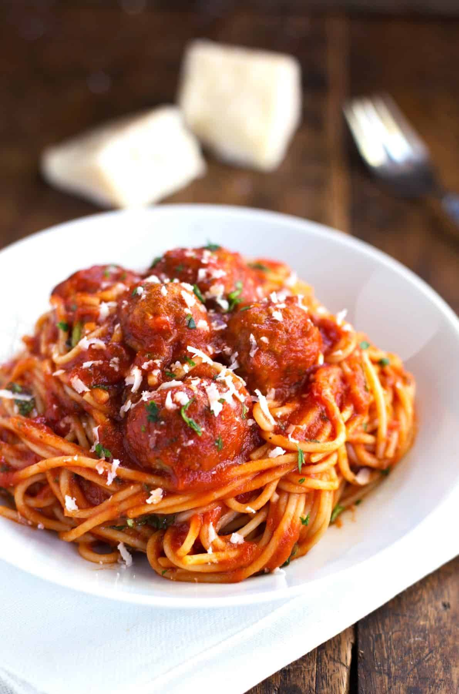

Home
Spaghetti recipe

Description
Spaghetti and Meatballs is a beloved Italian-American comfort food classic. It's a dish of tender,
flavorful meatballs served over a bed of perfectly cooked spaghetti,
all smothered in a rich, tomato-based sauce.
Ingredients
- 1 large egg
- 3 tablespoons finely chopped fresh basil (plus more for serving)
- 3 tablespoons finely chopped fresh parsley
- 1 teaspoon dried oregano
- ¾ teaspoon salt
- ¼ teaspoon freshly ground black pepper
- 2 cloves garlic, minced
- ¼ cup water
- 1½ pounds ground "meatloaf mix" (approximately equal parts ground beef, pork and veal)
- ¾ cup dried Italian style bread crumbs (such as Progresso)
- ½ cup freshly grated Parmigiano-Reggiano cheese (plus more for serving)
- Large jar (32 oz) good quality Marinara sauce (such as Rao's)
- 1 pound spaghetti
Steps
- Preheat the oven to 350°F and set an oven rack in the middle position.
- In a large bowl, whisk together the egg, basil, parsley, oregano, salt, pepper, garlic and water.
Add the meat, breadcrumbs and cheese and mix until just combined (your hands are the best tool).
Do not overwork it.
- Roll the mixture into golf ball-sized meatballs and place on an ungreased baking sheet.
Bake for about 10 minutes, then remove the baking sheet from oven and use a metal
spatula to turn the meatballs (they will stick a bit but should release easily when you scrape
under them with the spatula). Put the meatballs back in the oven and cook for another 10 minutes,
until they are nicely browned and almost cooked through.
- In the meantime, bring the marinara sauce to a simmer in a large skillet.
Taste it and adjust the seasoning if necessary (I usually add a healthy pinch of sugar and
some freshly ground black pepper). Transfer the browned meatballs to the marinara sauce,
leaving the fat behind. Cover loosely with a lid or foil and simmer for about 10 minutes,
until the flavors marry and the meatballs are cooked through.
Keep warm until ready to toss with pasta.
- While the meatballs are cooking, bring a large pot of well-salted water to a boil.
Add the spaghetti and cook until al dente. Drain, then toss with the sauce and meatballs
(you may find it easier to toss everything together in the pasta pot rather than the skillet;
it depends on the sizes of pans you are using.). Serve topped with fresh basil and
more grated cheese.
Source:onceuponachef